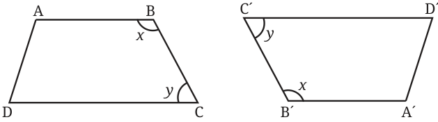
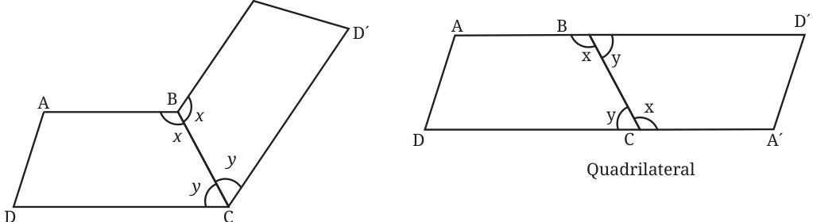
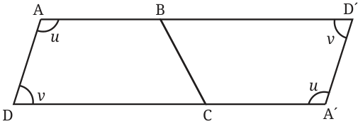

There is another interesting way of finding the area of a trapezium. Consider two copies of the given trapezium in which \(\text{AB} \parallel \text{CD}\). Rotate the second copy as shown.

What figure will we get when the two trapeziums are joined along BC? The possibilities are either a 6-sided figure or a 4-sided figure (quadrilateral).
Possibilities

We can rule out the first possibility by looking at the sum of angles \(x\) and \(y\). Since \(\text{AB} \parallel \text{CD}\), we have \(x + y = 180\), since they are internal angles along the same side of the transversal (BC). So \(\text{ABD}'\) and \(\text{A}'\text{CD}\) are straight lines. Therefore, the resulting figure is a quadrilateral.
What type of a quadrilateral is this?
Let us look at the other two angles of the trapezium.

We have \(u + v = 180\). Therefore, \(\text{AD} \parallel \text{D}'\text{A}'\), since the sum of the internal angles along the same side of the transversal \(\text{A}'\text{D}\) is \(180^{\circ}\). Since we already have \(\text{AD}' \parallel \text{A}'\text{D}\), the quadrilateral \(\text{AD}'\text{A}'\text{D}\) is actually a parallelogram.
\(\text{Area of the trapezium} = \frac{1}{2} \times \text{Area of the parallelogram}\)
\(= \frac{1}{2}\, h(a + b).\)